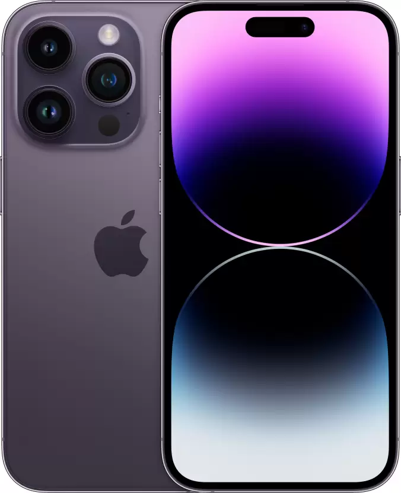

Demo on unorder list

APPLE iPhone 14 Pro (Deep Purple, 128 GB)
4.71,453 Ratings & 105 Reviews
- GB ROM
- 15.49 cm (6.1 inch) Super Retina XDR Display
- A16 Bionic Chip, 6 Core Processor Processor
- 1 Year Warranty for Phone and 6 Months Warranty for In-Box Accessories